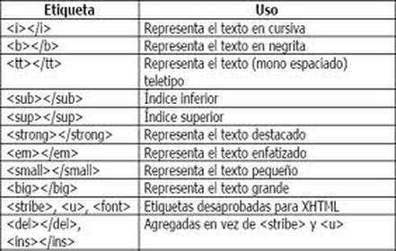
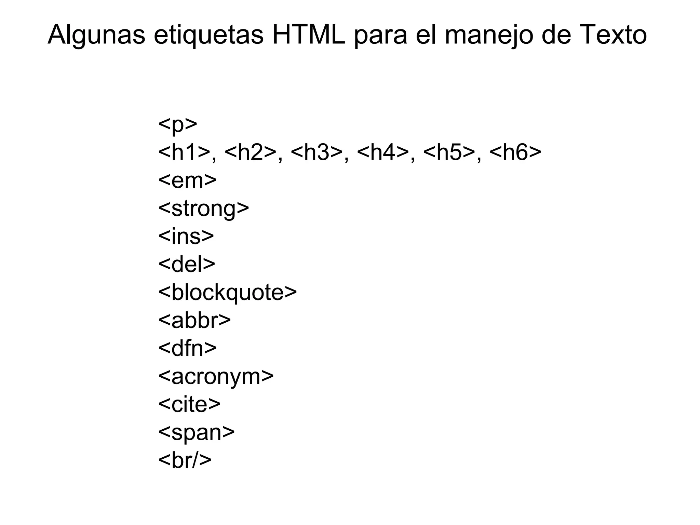
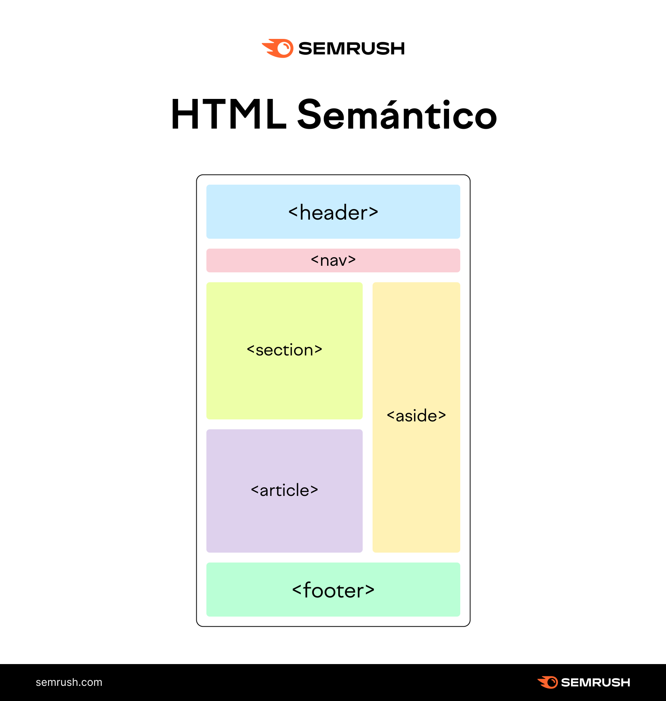

Etiquetas de docuemntos
Las etiquetas HTML son fragmentos de código que se utilizan para estructurar y dar formato al contenido de una página web, indicando al navegador cómo mostrar cada elemento. Generalmente se componen de una etiqueta de apertura (ej. <p>) y una de cierre (ej. <p>), aunque algunas son autocontenidas. Cada etiqueta tiene un propósito específico, como definir un párrafo, un encabezado, una imagen o un enlace. Funcionamiento Definición: Las etiquetas marcan el texto o los elementos para que el navegador los interprete correctamente. Estructura: La mayoría de las etiquetas van en pares, con una etiqueta de apertura (ej. <div>) y una de cierre (ej. <div>). Algunas etiquetas no necesitan una de cierre, como las que insertan una imagen (<img>). Atributos: Las etiquetas pueden tener atributos, que son información adicional que modifica su comportamiento o apariencia, como se ve en <p align="center>. Ejemplos de etiquetas comunes Encabezados: <h1>, <h2>, <h3> para diferentes niveles de títulos. Párrafos: <p> para bloques de texto. Enlaces: <a> para crear hipervínculos. Imágenes: <img> para incrustar imágenes. Negritas y énfasis: <strong> para el texto importante y <em> para énfasis. Saltos de línea: <br> para forzar un salto de línea. División de contenido: <div> para agrupar elementos en bloques, a menudo utilizado con CSS. En resumen, las etiquetas son los "bloques de construcción" del código web, ya que son la forma en que los programadores le dicen al navegador qué es cada parte de la página y cómo debe ser presentada al usuario.
Etiquetas de meta datos
Las etiquetas de metadatos HTML se encuentran en la sección <head> de un documento y proporcionan información sobre la página web para navegadores, motores de búsqueda y otros clientes. Las más comunes incluyen <meta charset="UTF-8"> para la codificación de caracteres, <meta name="description" content="..."> para una breve descripción, y <meta name="viewport" ...> para el diseño en dispositivos móviles. Otras etiquetas controlan el autor, las palabras clave o las instrucciones para los robots de búsqueda. Etiquetas de metadatos comunes Codificación de caracteres: <meta charset="UTF-8"> Especifica la codificación de caracteres del documento, lo que es crucial para que se muestren correctamente caracteres especiales. Descripción: <meta name="description" content="..."> Proporciona un resumen del contenido de la página que a menudo se muestra en los resultados de búsqueda. Palabras clave: <meta name="keywords" content="..."> Define palabras clave relevantes para la página. Su importancia para SEO ha disminuido con el tiempo. Autor: <meta name="author" content="..."> Indica el nombre del autor del documento. Viewport: <meta name="viewport" content="width=device-width, initial-scale=1.0"> Configura cómo se debe ajustar el ancho y la escala de la página en diferentes dispositivos, haciendo que el sitio sea "responsive". Robots: <meta name="robots" content="..."> Instruye a los robots de los motores de búsqueda sobre si deben indexar o no la página y si deben seguir sus enlaces. Propósito principal Mejorar la indexación por motores de búsqueda: Proporcionan información clave para que los buscadores comprendan de qué trata la página y la clasifiquen correctamente. Facilitar la administración del sitio: Ayudan a los navegadores y otras aplicaciones a interpretar y mostrar la página de manera adecuada. Controlar la visualización en dispositivos móviles: La etiqueta viewport es fundamental para asegurar que el diseño web se adapte a las pantallas de teléfonos y tabletas.
Etiquetas HTML de agrupación
Etiquetas HTML de agrupación Las siguientes etiquetas se utilizan para agrupar información, como es el caso de las etiquetas <div> o <p> que vimos en el ejemplo mostrado anteriormente: Etiqueta Descripción URL <div> Capa o división utilizado para agrupar varias etiquetas HTML. La etiqueta <div> <p> Define un párrafo de texto (con sus etiquetas HTML para texto). La etiqueta <p> <main> Contenedor para englobar la parte principal de la página. La etiqueta <main> <hr> Indica una separación temática del texto. La etiqueta <hr> <ol> Crea una lista numerada (con orden). La etiqueta <ol> <ul> Crea una lista donde el orden no importa. La etiqueta <ul> <li> Contiene uno de los ítems de una lista numerada o sin numerar. La etiqueta <li> <pre> Establece un texto preformateado (respetando espacios y saltos de línea). La etiqueta <pre> <blockquote> Agrupa información y características de una cita (autor, fuente, etc...). La etiqueta <blockquote> <dl> Crea una lista de definiciones. La etiqueta <dl> <dt> Establece el término de una definición. La etiqueta <dt> <dd> Establece la descripción de un término de una definición. La etiqueta <dd> <figure> Agrupa un elemento visual en una figura o ilustración. La etiqueta <figure> <figcaption> Establece una leyenda a una figura o ilustración. La etiqueta <figcaption> Estas son algunas de las etiquetas HTML utilizadas para agrupar contenido con cierta relación. En cada página específica enlazada explicamos cada etiqueta, pero vamos a ver por encima algunas de ellas para entender la idea principal:
Etiquetas Textuales
Las etiquetas textuales son fragmentos de código (HTML) que se usan para estructurar y dar formato al texto en una página web, diferenciando su significado semántico y/o apariencia visual. Sirven para indicar que un texto es importante (<code><code), está enfatizado (code> <code), es un título (code> <code), un párrafo (code> <code) o una cita (code> <code), entre otras funciones. <P> Tipos de etiquetas textuales Para el formato: <b>: Para aplicar negrita sin darle un significado especial al texto. <i>: Para aplicar cursiva sin darle un significado especial al texto. <u>: Para subrayar texto. <sup>: Para texto superíndice. <sub>: Para texto subíndice. <s>: Para texto tachado o que ya no es relevante. Para la semántica (significado): <strong>: Indica que el texto tiene una gran importancia. <em>: Indica que el texto debe ser enfatizado. <mark>: Resalta el texto como si fuera marcado con un rotulador. <cite>: Para el título de una obra creativa (libro, película, etc.). <q>: Para una cita corta dentro del texto. <abbr>: Para abreviaturas y acrónimos. <dfn>: Indica un término que está siendo definido. <code>: Muestra un fragmento de código de programación. <var>: Representa una variable en una expresión matemática o de programación. <time>: Indica una fecha o hora. Para la estructura y organización: <h1> - <h6>: Para encabezados de distintos niveles de importancia. div: Para agrupar otros elementos y crear secciones. <p>: Para crear párrafos de texto. <br>/`: Para hacer un salto de línea. <hr </`: Para crear una línea horizontal.
Etiquetas Sematicas.
Las etiquetas semánticas son etiquetas HTML que definen el significado y propósito de su contenido para los navegadores y los motores de búsqueda, ayudando a estructurar y organizar un sitio web de manera más clara. Ejemplos comunes incluyen <header<, <nav<, <article< y <footer<, que transmiten su función de forma inherente, a diferencia de las etiquetas no semánticas como <div> y <span<, que solo son contenedores genéricos. Características principales Claridad de propósito: Indican la función del contenido que encierran (por ejemplo, una <nav< para la navegación o un <article< para un contenido independiente). Estructura y organización: Ayudan a crear una jerarquía lógica en el código, facilitando su comprensión por parte de otros desarrolladores. Beneficios para el SEO: Proporcionan a los motores de búsqueda información sobre la estructura y el contenido de la página, lo que puede mejorar la indexación y el posicionamiento. Mejora de la accesibilidad: Sirven como puntos de referencia para las tecnologías de asistencia, como los lectores de pantalla, permitiendo a los usuarios navegar por el contenido de forma más eficiente. Mejora de la legibilidad del código: Hacen que el código sea más limpio y fácil de leer y mantener, especialmente en equipos de desarrollo. Ejemplos de etiquetas semánticas header: Encabezado de una sección o página. nav: Sección de navegación principal. article: Contenido independiente y autocontenido (por ejemplo, una entrada de blog). section: Una sección temática genérica. aside: Contenido relacionado pero separado del flujo principal (por ejemplo, una barra lateral). footer: Pie de página de una sección o página. figure: Para agrupar contenido de referencia, como imágenes, con una leyenda figcaption.